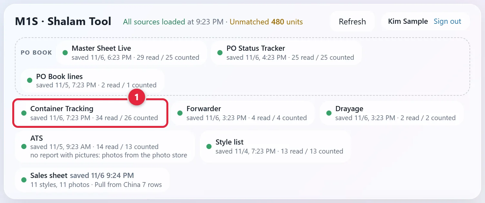
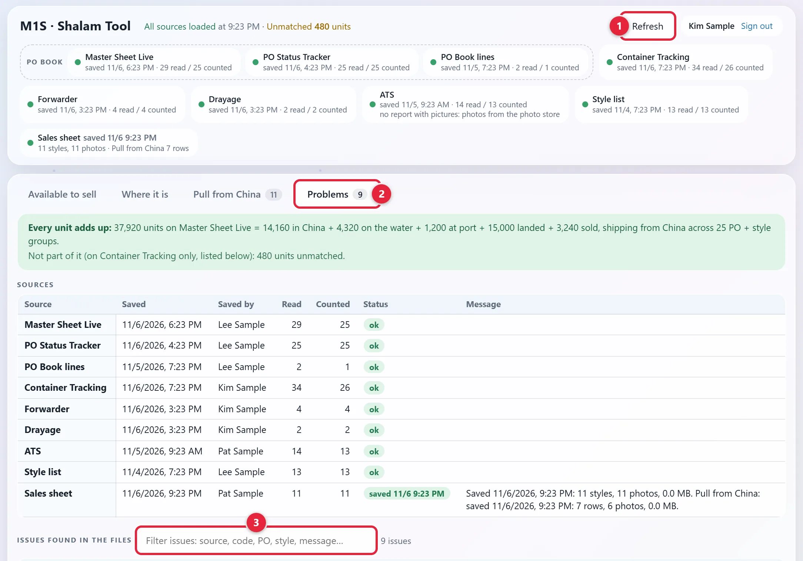
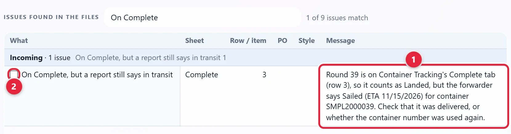
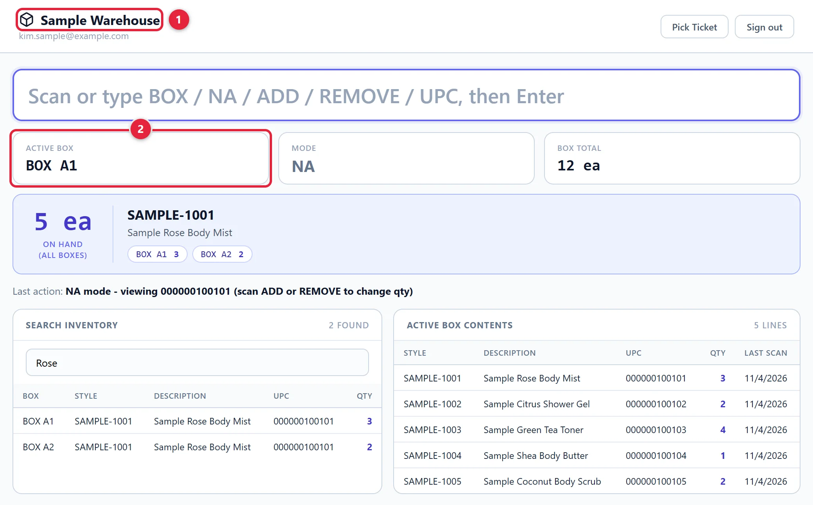

When a container reaches the warehouse, check the goods in and close its record, so the numbers across our sheets and the ERP agree.
Draft, not yet confirmed. Closing the container record comes from the Container Tracking Sheet. The check-in, count and discrepancy steps are general practice, and none of our tools covers them.
Jump to: Check the goods in · Close the round · Sample boxes · Rules · Reference
Screenshots use made-up sample data. Click any picture to see it larger. This page is public, so a few names in the pictures are changed or left out. The tool shows the real ones. The sheet's tabs are drawn, because the real workbook holds live orders. Scroll a drawn table sideways if it doesn't fit.
Click Open Shalam Tool above. Sign in with your Metro1 Microsoft account if it asks. Then click the Container Tracking chip near the top 1. The workbook opens on SharePoint in a new tab.

Go to the Open tab. Find the container by its Container #. Check that its Factory and PO# match the packing list. Note its Round #. You'll need it to close the round.
| Container # | Round # | ETA | Factory | PO# | Packing list sent to WH | Notes |
|---|---|---|---|---|---|---|
| SMPL2000102 | 41 | 11/4/2026 | Sample Factory B | 900102 | 11/4/2026 | |
| SMPL2000103 | 41 | 11/5/2026 | Sample Factory C | 900103 | 11/4/2026 | |
| SMPL2000101 | 42 | 11/15/2026 | Sample Factory A | 900101 |
Count them against the packing list. Note any damage. Packing list sent to WH shows when the packing list went to the warehouse.
Tell Logistics and Production about any shortage, overage or damage.
The ERP is the company's stock and order system. Saul to confirm the screen and fields. Ask Saul before entering anything.
Look for the Round #. A round can have more than one container, and each container has its own row. Round 41 below has two. If one of them hasn't been delivered yet, or you can't tell, ask Saul before you move anything (draft).
| ID# | Container # | Round # | ETD | ETA | Factory | PO# |
|---|---|---|---|---|---|---|
| 1 | SMPL2000102 | 41 | 10/7/2026 | 11/4/2026 | Sample Factory B | 900102 |
| 2 | SMPL2000103 | 41 | 10/8/2026 | 11/5/2026 | Sample Factory C | 900103 |
| 3 | SMPL2000101 | 42 | 10/23/2026 | 11/15/2026 | Sample Factory A | 900101 |
If a container in this round hasn't been delivered yet, don't move its row. Ask Saul whether to move the others now (draft).
Once every container has been delivered, copy every row of that round, with all its dates. Paste them under the last row on Complete. Then delete them from Open, so no copy stays. Complete has the same columns as Open. The round then counts as landed in Late & Short and the Shalam Tool.
| ID# | Container # | Round # | ETD | ETA | Factory | PO# |
|---|---|---|---|---|---|---|
| 1 | SMPL2000102 | 41 | 10/7/2026 | 11/4/2026 | Sample Factory B | 900102 |
| 2 | SMPL2000103 | 41 | 10/8/2026 | 11/5/2026 | Sample Factory C | 900103 |
Don't move or delete them. The tools find each PO's round on that tab.
Save the workbook first, because the tool reads the saved file. Go back to the Shalam Tool. Click Refresh at the top right 1, so it reads the rows you just moved. By itself it reads again only every 5 minutes. A message shows beside the button while it reads. Wait for it to go away.

It's under the chips 2.
Under the Sources table, type On Complete in the filter box 3.
If no line shows, you're done. The list says No issues match the filter.
A line here 1 means a report still shows that container in transit. Check that it was delivered, or whether the container number was used again. If either is true, tick the line's box 2. That hides the line in your browser until its message changes.
If neither is true, don't tick the box. Ask Saul (draft).

This tool is for sample boxes, not containers. Saul to confirm who does this, and when.
Open Sample WarehouseClick Open Sample Warehouse above. The screen is headed Sample Warehouse 1. In the box at the top, scan or type BOX and its name, such as BOX A1, then press Enter. Active Box 2 shows it.

Scan or type ADD to add units, or REMOVE to take them off. NA only looks a UPC up and changes nothing. Mode shows which one is on.
In ADD or REMOVE, each scan changes the box by one unit. Active Box Contents lists what's in the box.
Type in Search Inventory to see which box holds a style. Pick Ticket at the top right opens the pick ticket page.
| Where the round's rows are | What the tools say |
|---|---|
| All on Open, ETA has passed | At port in the Shalam Tool, unless a report says otherwise. Late & Short goes by the reports, not the sheet's ETA. |
| All on Open, the drayage report (trucking from the port) shows an actual delivery date for every container | Landed in the Shalam Tool, Delivered in Late & Short |
| Some on Open, some on Complete | Not landed. The rows on Open still count |
| All on Complete | Landed, even if a report still shows a container in transit. The Shalam Tool lists that on its Problems tab. |
| Word | What it means |
|---|---|
| Round | One shipment. See the Glossary |
| Incoming | Goods in China, on the water or at port. See the Inventory Report guide |
| Landed | The round is on Complete, or drayage shows an actual delivery date for every container |
| Drayage | Trucking from the port to the warehouse |
| ATS report | The weekly ERP report of stock and what's available to sell |